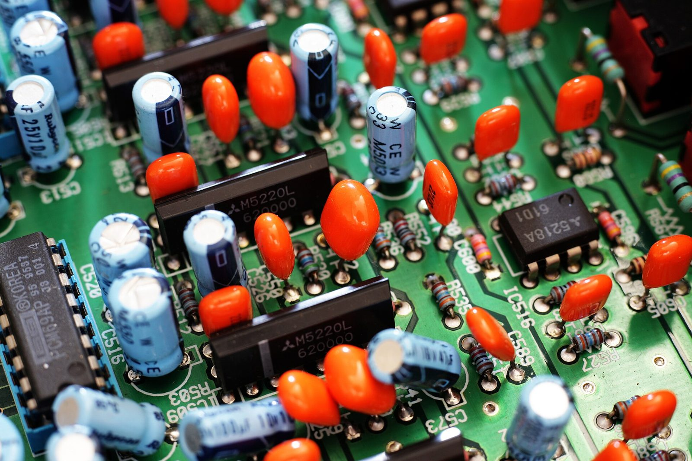

嵌入式软件工程师
我是张晨曦，郑州轻工业大学智能物联专业在读，2028 届。做 MCU 与嵌入式 Linux，也把 AI、后端和小程序接进硬件项目，让设备真正能用。

关于我

你好，我是张晨曦，郑州轻工业大学智能物联专业在读。 我想成为一名嵌入式开发工程师：从传感器、设备端程序到云端服务，把一个想法做成摸得着、能运行的产品。
目前在 MCU 与嵌入式 Linux 两个方向之间持续实践。前者让我着迷于资源受限下的控制与实时性，后者让我看到复杂设备系统的可能性。 AI 后端实习、微信小程序和竞赛项目，是构建完整智能硬件体验的补充能力，不是我想停留的终点。
- 语言
- C、Python，正在补数据结构与计算机基础
- MCU
- STM32（Keil）、ESP32（ESP-IDF），外设驱动与通信协议
- 工具链
- VSCode、Keil uVision、Git，逻辑分析仪与示波器
- 在学
- RTOS、嵌入式 Linux、设备驱动

代码在这里
下面的数据由构建脚本从 GitHub 抓取。项目本身比贡献数字更值得看。
—过去一年贡献
—公开仓库
—获得 Star
—关注者
正在加载贡献热力图…
少 多
加载中…